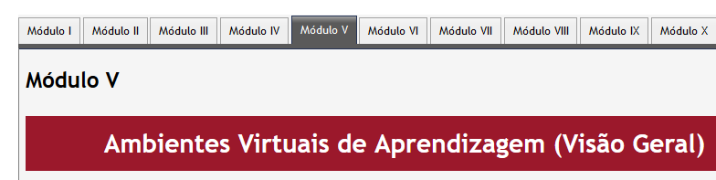

Configurando um curso/disciplina
Por padrão, um professor não pode adicionar um novo curso no Moodle. Para adicionar um novo curso é necessário ter papel de Administrador, Criador de Cursos ou Gerente. Entretanto, é possível, para professores, editar algumas configurações do curso/disciplina.
Ao acessar a sala virtual, clique na engrenagem, , localizada próximo a sua foto no menu superior, veja Figura 1. Depois, escolha na opção Editar configurações.
Figura 1. Configurações do Curso.
O formulário de edição do curso será exibido. Este formulário é composto pelas seguinte seções: Geral, Descrição, Formato do curso, Aparência, Arquivos e uploads, Acompanhamento de conclusão, Grupos, Renomear papel e Marcadores. Estas seções serão descritas abaixo, clique no tópico para exibir o texto:
Na seção Geral, teremos alguns campos, veja Figura 2, que não podem ser alterados, pois seguem um padrão organizacional da UFPE, são eles:
- Nome completo do curso: é apresentado na lista de cursos e no topo de cada página do curso.
- Nome breve do curso: é um identificador que segue um padrão adotado pela UFPE.
- Número de identificação do curso: é usado apenas nos processos de comunicação com sistemas externos.
Figura 2. Seção geral do formulário de configuração de curso.
Na configuração Visibilidade do curso, você deverá determinar se o curso aparecerá ou não na lista de cursos.
A partir dos planejamentos feitos, você deve ter uma data para o início e término do curso, assim selecione-os nas próximas opções.
Na seção Descrição pode ser informado o sumário do curso, veja Figura 3. O texto informado será exibido na lista de cursos.

Figura 3. Seção descrição do formulário de configuração de curso.
Podem ser anexados imagens e arquivos que complementem uma informação
importante a cerca do curso, veja Figura 4. Os arquivos serão exibidos na lista de
cursos junto com o resumo. Caso o curso possua uma logo, a imagem deve ser anexada aqui.

Figura 4. Arquivos de resumo do curso do formulário de configuração de curso.
Nesta seção pode ser escolhido o formato de curso, Figura 5. Esta configuração determina o layout da página do curso.
- Formato de atividade única: Para mostrar apenas uma atividade ou recurso (como um Quiz ou um pacote SCORM) na página do curso;
- Formato social: Um fórum é mostrado na página do curso;
- Formato tópicos: A página do curso é organizada em seções de tópicos;
- Formato TabTopics: A página do curso é organizada em seções de abas;
- Formato semanal: A página do curso é organizada em seções semanais, com a primeira semana começando na data de início do curso.

Figura 5. Seção formato do curso do formulário de configuração de curso.
Na configuração Seções escondidas, a opção seções escondidas são mostradas contraídas” define que as seções aparecerão aos estudantes com a área das atividades contraída e com a cor da seção alterada. A seção é visualizada mas os conteúdos da seção ficam ocultos.
A outra opção, “seções ocultas são completamente invisíveis”, não permite que as seções sejam visualizadas enquanto forem marcadas como ocultas.
A opção Layout do curso determina se o curso inteiro é exibido em uma página ou dividida em várias páginas.

Figura 6. Seção Aparência do formulário de configuração de curso.
Esta configuração define o número de notícias recentes que serão
visualizadas na página principal do curso, no bloco “Últimas Notícias”.
Se você definir o valor como “0 itens” o bloco “Últimas Notícias” não será visualizado.
Os resultados das avaliações podem ser consultados pelos alunos na página de Relatório de Notas, cujo acesso se faz por um link predefinido na página principal do curso.
Relatórios de atividade estão disponíveis para cada participante, mostrando a sua atividade no curso, como também mensagens do fórum ou submissões de tarefas. Esses relatórios também incluem logs de acesso. Esta configuração determina se um aluno pode ver os seus próprios relatórios de atividade através da sua página de perfil.
Estas opções definem o tamanho máximo dos documentos que os estudantes deste curso podem enviar ao servidor.

Figura 7. Seção arquivos e uploads do formulário de configuração de curso.

Figura 8. Seção Acompanhamento de Conclusão do formulário de configuração de curso.
Habilitando essa opção será possível acompanhar a conclusão de atividades por parte dos alunos e configurar as condições de conclusão do curso.

Figura 9. Seção Grupos do formulário de configuração de curso.
Esta configuração possui 3 opções:
- Nenhum grupo – Não há sub-grupos, todos fazem parte de uma grande comunidade
- Grupos separados – Cada membro de grupo pode ver apenas seu próprio grupos, os outros são invisíveis
- Grupos visíveis – Cada membro do grupo trabalha no seu próprio grupo mas pode também ver outros grupos
Caso habilitado, o modo de grupos será aplicado a todas as atividades do curso.
Esta configuração permite alterar os nomes dos papéis exibidos no curso. Apenas o nome exibido é alterado.

Figura 10. Seção Renomear Papel do formulário de configuração de curso.

Figura 11. Seção Marcadores do formulário de configuração de curso.
Com todas as configurações definidas, clique no botão “Salvar e mostrar”, assim você será redirecionado para a página de “Usuários Inscritos”, e aqui poderão ser cadastrados os alunos.
Modificando o layout dos cursos
Um curso Moodle pode ser apresentado de formas muito diferentes a depender do tema e formato de curso utilizado (layout). Abaixo temos uma página de curso em branco usando o tema básico padrão do Moodle e Formato Semanal:
Figura 1. Exemplo de página da sala virtual.
- Bloco Navegação
Normalmente visível em todas as páginas, este bloco ajuda a encontrar o seu caminho em torno do curso e site.
- Bloco Administração
Mais uma vez, normalmente visível em todas as páginas, este bloco dá diferentes níveis de acesso a professores e alunos.
- Seções do Curso
Aqui é onde os materiais de aprendizagem são exibidos. Este elemento pode ser disposto em uma ou várias semanas, tópicos, fóruns ou outros layouts.
- Blocos laterais
Quais blocos estarão visíveis vai depender do que o administrador configurou e do que você como professor quiser adicionar.
Formatos de Curso
Um formato de curso definido para um curso define a forma de apresentação (layout) do curso. O formato de um curso pode ser configurado por usuários que utilizem o perfil administrador do AVA, Secretário de Curso, Coordenador de Curso, ou Professor.
A criação de um curso é realizada pelo Administrador do AVA, onde serão definidos os formatos de cursos iniciais. Tipicamente, os cursos são criados utilizando os layouts mais utilizados, são eles:
Formato Tópicos
A página do curso é organizada em seções de tópicos que podem receber títulos personalizados. Cada seção tópico será composta por seus recursos, atividades e rótulos.
É ideal para uso se o curso for baseado em objetivos, onde cada objetivo pode ter diferentes tempos para conclusão.

Figura 2. Formato Tópicos.
Formato semanal
A página do curso é organizada em seções semanais, com a primeira semana começando na data de início do curso. O Moodle criará uma seção para cada semana no curso. É possível adicionar conteúdo, fóruns, questionários... na seção de cada semana.
Se você quiser que os estudantes trabalhem nos mesmos materiais ao mesmo tempo, esta seria uma boa escolha.
Certifique-se de que a sua data de início do curso está correta. Caso contrário as datas de suas semanas apresentarão datas incorretas.
Figura 3. Formato Semanal.
Formato TabTopics
Este formato de curso do Moodle exibe cada seção em uma guia. Muito útil na organização de cursos com conteúdo extenso.

Figura 4. Formato TabTopics.
Ainda podemos encontrar várias opções de formato de curso no Moodle, sejam estas opções nativas ou instaladas através de plugins. Outras opções nativas do moodle são:
- Formato social: Um fórum é mostrado na página do curso;
- Formato de atividade única: Para mostrar apenas uma atividade ou recurso (como um Quiz) na página do curso.
Também é possível ajustar o número de seções (tópicos), configurar o comportamento das seções escondidas (por padrão invisíveis) e modificar o layout do curso (Por padrão configurado para mostrar todos os tópicos em uma página, ou em páginas separadas, caso seja selecionada esta opção)
Ativar edição e Seções
Para realizar qualquer tipo de edição no curso, antes de tudo, é necessário clicar no botão: Ativar edição localizado na parte superior direita da página ou no ícone localizado no menu ao lado do ícone de editar configurações.
Editando seções/tópicos
Depois de clicar em "Ativar edição", localize a seção que deseja editar e clique no link (à sua direita) "Editar" > "Editar seção". No exemplo acima será utilizado o primeiro link "Editar", que representa a seção 0, ou seção principal do curso, aquele que fica posicionado antes de começar a sequência de tópicos (1,2,3...). A seguintes opções podem ser configuradas:
- Nome da seção;
- Sumário;
- Restringir acesso.

Para editar uma seção específica, perceba que (com a opção "Ativar edição" habilitada) na mesma linha onde é exibido o título de uma seção, à sua direita, estará disponível um link "Editar" correspondente àquela seção. No exemplo acima, em "Tópico 1", perceba o link editar à sua direita

Para trocar a posição das seções, basta posicionar o mouse em cima do ícone à esquerda do título do tópico (no exemplo, Tópico 1) pressionar o botão esquerdo do mouse, segurando-o, e arrastar o tópico para cima ou para baixo, e soltar o botão quando chegar à posição desejada.

Botões e Ícones
Abaixo estão listados os principais ícones de botões/opções que estarão presentes em várias partes do Moodle:

Ferramenta de edição de texto
O Moodle nos apresentará vários locais onde é possível inserir/editar conteúdo num curso, nesses locais toda vez que formos editar texto para um curso, nos depararemos com a caixa de edição de texto, ou simplesmente "Editor de Texto", o Moodle disponibiliza vários Editores que podem ser configurados, em nosso AVA utilizaremos o Editor de Texto "Atto" que é comumente utilizado em outros ambientes Moodle e é exibido na figura abaixo:

Inserindo Imagens/arquivos
Em várias partes do Moodle também nos deparemos com a ferramenta de Upload de Arquivos:

Os principais métodos de inserção de arquivos serão listados no menu à esquerda:
- Arquivos do Servidor;
- Arquivos Recentes;
- Enviar Arquivo;
- Utilizar URL;
- Arquivos Privados;
- Wikimedia.
Editando seções e Inserindo Recursos e Atividades
Recursos: Ferramentas estáticas, não requerem interação do aluno. Utilizadas, principalmente, para disponibilização de conteúdos para leitura.
Atividades: Ferramentas dinâmicas, podem ser utilizadas como meio avaliativo durante o curso. Pode-se exigir a interação (feedback) dos estudantes e, a partir desta interação, atribuir notas.
Para inserir Recursos e Atividades dentro de um curso Moodle deve-se:>
- Acessar o curso e clicar na opção "Ativar Edição"
- Escolher um local em um tópico específico para inserir a Atividade/Recurso
- Clicar no link "+ Adicionar uma atividade ou recurso"

Inserindo blocos
Blocos são itens que podem ser adicionados à coluna esquerda ou direita ou o centro de qualquer página no Moodle. Eles também podem ser adicionados ao painel.

Qualquer bloco pode ser "colado" para aparecer em todos os contextos abaixo, como ao longo de um curso, ou pode ser inserido em uma atividade particular.
Os blocos podem ser colocados no canto da tela através dos ícones do Dock.
Inserindo blocos:
- Acesse o curso e clique em "Ativar Edição";
- Role a tela até o final (para baixo) e localize a opção "Adicionar bloco";
- Escolha um bloco na lista e clique para adicionar.

O Moodle disponibiliza vários blocos com diferentes funcionalidades, outros blocos podem ser adicionados pelo administrador do AVA através da instalação de plugins disponibilizados pela comunidade Moodle.
Editando configurações
Um dos principais blocos, já configurado para já ser exibido por padrão, é o bloco "Administração". Nele serão encontradas várias funcionalidades de administração do AVA disponíveis para o perfil em uso.
Uma importante opção desse bloco que abordaremos agora é "Configurações do curso".